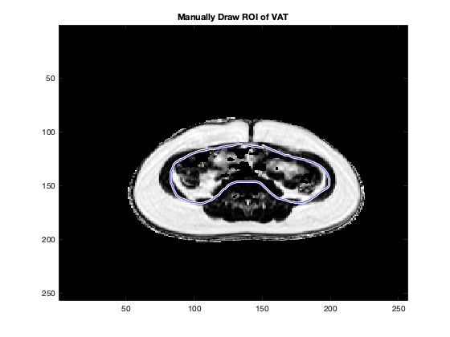

Contents
- Load images
- Calculate Fat Fraction Map in [%]
- Create Body/Good SNR Mask
- Apply a 2D filter to the mask (see help medfilt2)
- Apply this Body/SNR Mask to the FF map
- Manually Draw Visceral Fat ROI
- Characterize VAT ROI - histogram, size in pixels, mean, median, std
- Part III - Semiautomatically Generate VAT ROI -
- --Repeat for the masked Fat Fraction Map
- Part IV - Determine Accuracy, Differences
- Part V - Compare Post VAT vs. Pre VAT
- Part VI SAT Measurement
% Kristina Liu % BI 265 % Measurement of Fat Lab
Load images
clear all; close all; clc current_dir = pwd; %input = readidf_file_pc(current_file, current_dir); %See help for options, esp for different operating systems %image data will be stored in <input>.img %Pre Diet current_file = 'data/suc047_4_S10'; VATslicePre = 30; %15 if counting from first slice, 30 if counting from superior end InPrer = read_idf_image_pc(strcat(current_file, '_In'), current_dir, 0); OutPrer = read_idf_image_pc(strcat(current_file, '_Out'), current_dir, 0); FPrer = read_idf_image_pc(strcat(current_file, '_F'), current_dir, 0); WPrer = read_idf_image_pc(strcat(current_file, '_W'), current_dir, 0); %record image size parameters img_size = size(InPrer.img(:,:,:)); %FYI %img_rl = img_size(1); %img_ap = img_size(2); num_slices = img_size(3); %other methods of collecting information: im.data, im.img %Rotate and Flip the images to be in matlab-style format for j=1:num_slices FPre(:,:,j) = flipud(imrotate(FPrer.img(:,:,j),90)); WPre(:,:,j) = flipud(imrotate(WPrer.img(:,:,j),90)); InPre(:,:,j) = flipud(imrotate(InPrer.img(:,:,j),90)); OutPre(:,:,j) = flipud(imrotate(OutPrer.img(:,:,j),90)); end %Display the image by slice - check read correctly figure('Name', strcat('Original Image: ', current_file)) for j=1:img_size(3) imagesc(FPre(:,:,j)) axis image title({'Fat: Slice',j}); colormap gray pause(0.1) end
%Post Diet current_dir = pwd; current_file = 'data/suc047_2_S21'; VATslicePost = 27; %18 if counting from first slice (inferior), 27 if counting %from superior end InPostr = read_idf_image_pc(strcat(current_file, '_In'), current_dir, 0); OutPostr = read_idf_image_pc(strcat(current_file, '_Out'), current_dir, 0); FPostr = read_idf_image_pc(strcat(current_file, '_F'), current_dir, 0); WPostr = read_idf_image_pc(strcat(current_file, '_W'), current_dir, 0); %record image size parameters img_size = size(InPostr.img(:,:,:)); %FYI %img_rl = img_size(1); %img_ap = img_size(2); num_slices = img_size(3); %other methods of collecting information: im.data, im.img %Rotate and Flip the images to be in matlab-style format for j=1:num_slices FPost(:,:,j) = flipud(imrotate(FPostr.img(:,:,j),90)); WPost(:,:,j) = flipud(imrotate(WPostr.img(:,:,j),90)); InPost(:,:,j) = flipud(imrotate(InPostr.img(:,:,j),90)); OutPost(:,:,j) = flipud(imrotate(OutPostr.img(:,:,j),90)); end %Display the image by slice - check read correctly figure('Name', strcat('Original Image: ', current_file)) for j=1:img_size(3) imagesc(FPost(:,:,j)) axis image title({'Fat: Slice',j}); colormap gray pause(0.1) end
Calculate Fat Fraction Map in [%]
close all; FF_Pre=FPre(:,:,VATslicePre)./(FPre(:,:,VATslicePre)+WPre(:,:,VATslicePre)); figure('Name', 'Fat Fraction Pre Diet') imagesc(FF_Pre); colormap gray FF_Post=FPost(:,:,VATslicePost)./(FPost(:,:,VATslicePost)+ ... WPost(:,:,VATslicePost)); figure('Name', 'Fat Fraction Post Diet') imagesc(FF_Post); colormap gray
Create Body/Good SNR Mask
close all; MaskInPre=zeros(img_size(1)); for i = 1:img_size(1) for j = 1:img_size(2) if InPre(i,j,30)>125 MaskInPre(i,j)=1; else MaskInPre(i,j)=0; end end end figure('Name', 'Body Mask Pre Diet') imagesc(MaskInPre); colormap gray MaskInPost=zeros(img_size(1)); for i = 1:img_size(1) for j = 1:img_size(2) if InPost(i,j,30)>175 MaskInPost(i,j)=1; else MaskInPost(i,j)=0; end end end figure('Name', 'Body Mask Post Diet') imagesc(MaskInPre); colormap gray %Threshold an image set %example: %Inmask = In>100;
Apply a 2D filter to the mask (see help medfilt2)
close all; MaskIn_Pre=medfilt2(MaskInPre); %Evaluate filter -> Display, confirm threshold and filter choice figure('Name', '2D Mask for Pre Diet') imagesc(MaskIn_Pre); colormap gray MaskIn_Post=medfilt2(MaskInPost); %Evaluate filter -> Display, confirm threshold and filter choice figure('Name', '2D Mask for Post Diet') imagesc(MaskIn_Post); colormap gray
Apply this Body/SNR Mask to the FF map
close all; FF_Pre_masked = MaskIn_Pre.*FF_Pre; figure('Name', 'Pre Diet Masked FF') imagesc(FF_Pre_masked); colormap gray FF_Post_masked = MaskIn_Post.*FF_Post; figure('Name', 'Post Diet Masked FF') imagesc(FF_Post_masked); colormap gray %Select Slice of Interest %example: %FFi=FF(:,:,VATslice);
close all; subplot(1,3,1) imagesc(FF_Pre); colormap gray title('Pre Diet FF map') subplot(1,3,2) imagesc(MaskIn_Pre); colormap gray title('Pre Diet Body Mask') subplot(1,3,3) imagesc(FF_Post_masked); colormap gray title('Pre Diet Masked FF') % The FF mask has the noise outside the body which the body mask removed in % the masked FF. Step 3 and 4 created a median smoothed mask that allowed % values for values within the body and made everything outside 0. % Changing the threshold will change the size and shape of the body mask. % You will not want to do these steps when thresholding does not % differetiate noise from stucture well.
Manually Draw Visceral Fat ROI
close all; %Display image figure('name','FF Pre Diet') imagesc(FF_Pre_masked); title('Manually Draw ROI of VAT'); colormap gray %start timing tic %Code to draw an ROI freehandroi_man=imfreehand(gca); manVATmask_Pre=createMask(freehandroi_man); %end timing manualVATtime_Pre = toc manVATmask_Pre_num = double(manVATmask_Pre); manVATFF_Pre=manVATmask_Pre_num.*FF_Pre_masked;
manualVATtime_Pre = 35.4512
Characterize VAT ROI - histogram, size in pixels, mean, median, std
figure('Name', 'ROI FF Pre Diet') imagesc(manVATFF_Pre); colormap gray manVATFF_Pre(isnan(manVATFF_Pre))=0; manVATFF_Pre_mean = mean(mean(manVATFF_Pre)); manVATFF_Pre_median = median(median(manVATFF_Pre)); manVATFF_Pre_std = std(std(manVATFF_Pre)); figure() manVAT_Pre_histogram = histogram(manVATFF_Pre); manVATFF_Pre_size = 0; for i = 1:img_size(1) for j = 1:img_size(2) if manVATFF_Pre(i,j)>0 manVATFF_Pre_size = manVATFF_Pre_size+1; end end end %eg: %manVATmean = mean(FFi(manVATmask)),
Part III - Semiautomatically Generate VAT ROI -
2-Automatically generate VAT mask and VAT-FF for: 1-Use Fat Fraction Map, 2 - Use masked Fat Fraction Map
close all; %1-Manually Draw Visceral ROI %Display image figure('name','FF Pre Diet') imagesc(FF_Pre); title('Manually Draw ROI of VAT'); colormap gray %start timing tic %Code to draw an ROI freehandroi_aut=imfreehand(gca); autVATmask_Pre=createMask(freehandroi_aut); %end timing autVATmask_Pre_num = double(autVATmask_Pre); autVATroi_Pre=autVATmask_Pre_num.*FF_Pre; figure('Name', 'Automatic ROI FF Pre Diet') imagesc(autVATroi_Pre); colormap gray %Threshold the FF map to > 50 autVATthresh_Pre=zeros(img_size(1)); for i = 1:img_size(1); for j = 1:img_size(2); if FF_Pre(i,j)>0.5 autVATthresh_Pre(i,j)=autVATroi_Pre(i,j); else autVATthresh_Pre(i,j)=0; end end end figure('Name', 'Automatic FF Pre Diet') imagesc(autVATthresh_Pre); colormap gray
--Repeat for the masked Fat Fraction Map
close all; %1-Manually Draw Visceral ROI %Display image figure('name','FF Pre Diet') imagesc(FF_Pre_masked); title('Manually Draw ROI of VAT'); colormap gray %start timing tic %Code to draw an ROI freehandroi_aut_masked=imfreehand(gca); autVATmask_Pre_masked=createMask(freehandroi_aut_masked); %end timing autVATmask_Pre_num_masked = double(autVATmask_Pre_masked); autVATroi_Pre_masked=autVATmask_Pre_num_masked.*FF_Pre_masked; figure('Name', 'Automatic ROI FF Pre Diet') imagesc(autVATroi_Pre_masked); colormap gray %Threshold the FF map to > 50 autVATthresh_Pre_masked=zeros(img_size(1)); %Generate a VAT ROI Fat Fraction (masked by viscera and by FF > 50) for i = 1:img_size(1) for j = 1:img_size(2) if FF_Pre_masked(i,j)>0.5 autVATthresh_Pre_masked(i,j)=autVATroi_Pre_masked(i,j); else autVATthresh_Pre_masked(i,j)=0; end end end %Make a Figure of VAT ROI FF image figure('Name', 'Automatic masked FF Pre Diet') imagesc(autVATthresh_Pre_masked); colormap gray
close all; %Create a histogram of the VAT ROI Fat Fraction values figure('Name', 'Visceral FF ROI') autVAT_Pre__mask_histogram = histogram(autVATthresh_Pre_masked,10); figure('Name', 'VAT FF ROI') manVAT_Pre_histogram = histogram(manVATFF_Pre,10); % Both histograms contain a majority of 0s. % The visceral FF ROI has distribution from % 0.1 to 1. VAT ROI has a distribution between 0.5 and 1. % We have this shape for VAT because we % thresholded all values below 0.5 while for the visceral ROI we manually % drew it out.

Part IV - Determine Accuracy, Differences
close all; autVATthresh_Pre(isnan(autVATthresh_Pre))=0; autVATthresh_Pre_mean = mean(mean(autVATthresh_Pre)); autVATthresh_Pre_median = median(median(autVATthresh_Pre)); autVATthresh_Pre_std = std(std(autVATthresh_Pre)); autVATthresh_Pre_size = 0; for i = 1:img_size(1) for j = 1:img_size(2) if autVATthresh_Pre(i,j)>0 autVATthresh_Pre_size = autVATthresh_Pre_size+1; end end end autVATthresh_Pre_masked(isnan(autVATthresh_Pre_masked))=0; autVATthresh_Pre_masked_mean = mean(mean(autVATthresh_Pre_masked)); autVATthresh_Pre_masked_median = median(median(autVATthresh_Pre_masked)); autVATthresh_Pre_masked_std = std(std(autVATthresh_Pre_masked)); autVATthresh_Pre_masked_size = 0; for i = 1:img_size(1) for j = 1:img_size(2) if autVATthresh_Pre(i,j)>0 autVATthresh_Pre_masked_size = autVATthresh_Pre_masked_size+1; end end end overlap_masked_FF_man_ROI = zeros(size(img_size)); for i = 1:img_size(1) for j = 1:img_size(2) if autVATthresh_Pre_masked(i,j) && manVATFF_Pre(i,j)>0 overlap_masked_FF_man_ROI(i,j) = 1; end end end overlap_VAT_Visc = zeros(size(img_size)); for i = 1:img_size(1) for j = 1:img_size(2) if autVATthresh_Pre_masked(i,j) && manVATFF_Pre(i,j)>0 overlap_VAT_Visc = overlap_VAT_Visc+1; end end end overlap_both_auto = zeros(size(img_size)); for i = 1:img_size(1) for j = 1:img_size(2) if autVATthresh_Pre_masked(i,j) && autVATthresh_Pre(i,j)>0 overlap_both_auto(i,j) = 1; end end end overlap_mask = zeros(size(img_size)); for i = 1:img_size(1) for j = 1:img_size(2) if autVATthresh_Pre_masked(i,j) && autVATthresh_Pre(i,j)>0 overlap_mask = overlap_mask+1; end end end %Calculate Dice Coefficient & the %Difference in Size %A - Compare VAT ROI on masked FF vs. manual VAT ROI DC_VAT_Visc= 2.*overlap_both_auto/(manVATFF_Pre_size + ... autVATthresh_Pre_masked_size); VAT_Visc_perc_diff = (manVATFF_Pre_size-autVATthresh_Pre_masked_size)/... manVATFF_Pre_size; %B - Compare VAT ROI on masked FF to the VAT ROI on FF (not masked) DC_VAT_Visc= 2.*overlap_mask/(autVATthresh_Pre_size + ... autVATthresh_Pre_masked_size); mask_perc_diff = (autVATthresh_Pre_size + autVATthresh_Pre_masked_size)/... autVATthresh_Pre_size;
%Display FF image, 2 masks, and overlap of the 2 masks % A close all; figure('Name', 'A') subplot(4,1,1) imagesc(FF_Pre_masked); colormap gray title('Masked FF Pre Diet') subplot(4,1,2) imagesc(autVATthresh_Pre_masked); colormap gray title('Automatic masked ROI Pre Diet') subplot(4,1,3) imagesc(manVATFF_Pre); colormap gray title('Manual VAT Roi Pre Diet') subplot(4,1,4) imagesc(overlap_masked_FF_man_ROI); colormap gray title('Overlap Manual and Automatic') % B figure('Name', 'B') subplot(4,1,1) imagesc(FF_Pre_masked); colormap gray title('Masked FF Pre Diet') subplot(4,1,2) imagesc(autVATthresh_Pre); colormap gray title('Automatic masked FF Pre Diet') subplot(4,1,3) imagesc(autVATthresh_Pre_masked); colormap gray title('Automatic FF Pre Diet') subplot(4,1,4) imagesc(overlap_both_auto); colormap gray title('Overlap Manual and Automatic') % The manual approach allows for fat fractions less than 0.5 percent %which the automatic ones does not. % Automatically thresholding with an without noise makes no difference % because they are NaN and replaced with zeros.
%Calculate & Report stats on the VAT ROIs %Summary of Results disp(sprintf('Parameter Manual VAT Semiauto VAT')) disp(sprintf('volume 2973 1958')) disp(sprintf('median 0 0')) disp(sprintf('mean 0.0243 0.0227')) disp(sprintf('st dev 0.0.0940 0.0981'))
Parameter Manual VAT Semiauto VAT volume 2973 1958 median 0 0 mean 0.0243 0.0227 st dev 0.0.0940 0.0981
Part V - Compare Post VAT vs. Pre VAT
close all; %1-Manually Draw Visceral ROI %Display image figure('name','FF Post Diet') imagesc(FF_Post_masked); title('Manually Draw ROI of VAT'); colormap gray %start timing tic %Code to draw an ROI freehandroi_aut_Post=imfreehand(gca); autVATmask_Post_masked=createMask(freehandroi_aut_Post); %end timing autVATmask_Post_num_masked = double(autVATmask_Post_masked); autVATroi_Post_masked=autVATmask_Post_num_masked.*FF_Post_masked; %Threshold the FF map to > 50 autVATthresh_Post_masked=zeros(img_size(1)); %Generate a VAT ROI Fat Fraction (masked by viscera and by FF > 50) for i = 1:img_size(1) for j = 1:img_size(2) if FF_Post_masked(i,j)>0.5 autVATthresh_Post_masked(i,j)=autVATroi_Post_masked(i,j); else autVATthresh_Post_masked(i,j)=0; end end end %Make a Figure of VAT ROI FF image figure('Name', 'Automatic masked FF Post Diet') imagesc(autVATthresh_Post_masked); colormap gray
close all; autVATFF_Pre(isnan(autVATthresh_Post_masked))=0; Post_mean = mean(mean(autVATthresh_Post_masked)); Post_median = median(median(autVATthresh_Post_masked)); Post_std = std(std(autVATthresh_Post_masked)); figure() Post_histogram = histogram(autVATthresh_Post_masked, 10); Post_size = 0; for i = 1:img_size(1) for j = 1:img_size(2) if autVATthresh_Post_masked(i,j)>0 Post_size = Post_size+1; end end end Pre_Post_diff = (autVATthresh_Pre_size - Post_size)/autVATthresh_Pre_size figure() subplot(2,1,1) imagesc(autVATthresh_Post_masked); colormap gray title('Automatic masked FF Pre Diet') subplot(2,1,2) imagesc(autVATthresh_Pre); colormap gray title('Automatic masked FF Post Diet') % The mean for Day10 is lower than Pre Diet, as is the standard deviation % The patient had a decrease in visceral fat from the diet.
Pre_Post_diff =
0.3042
Part VI SAT Measurement
Visceral Fat can be manually drawn out from the fat fraction map and created into a mask. Everything inside the mask will be a 0, leaving the subcutaneous fat.